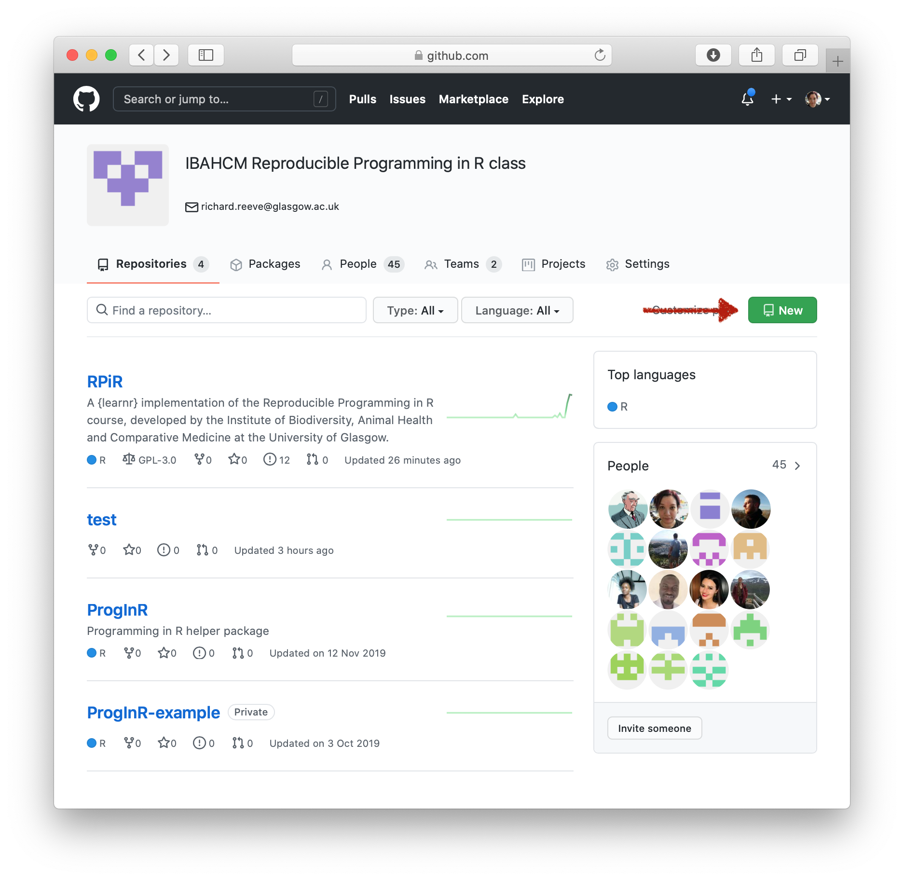
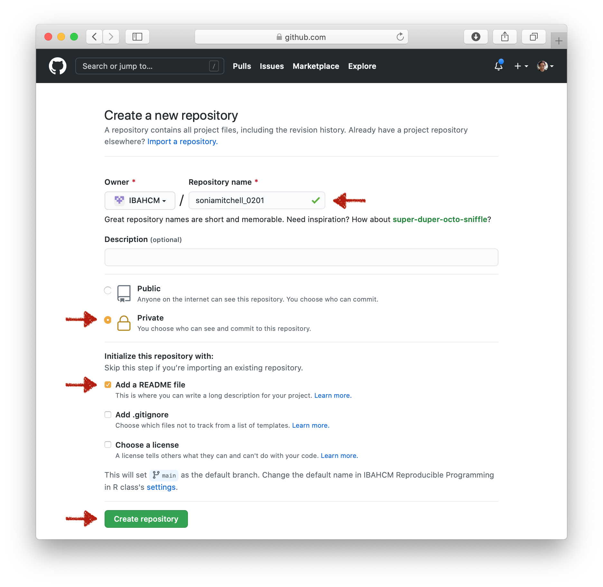
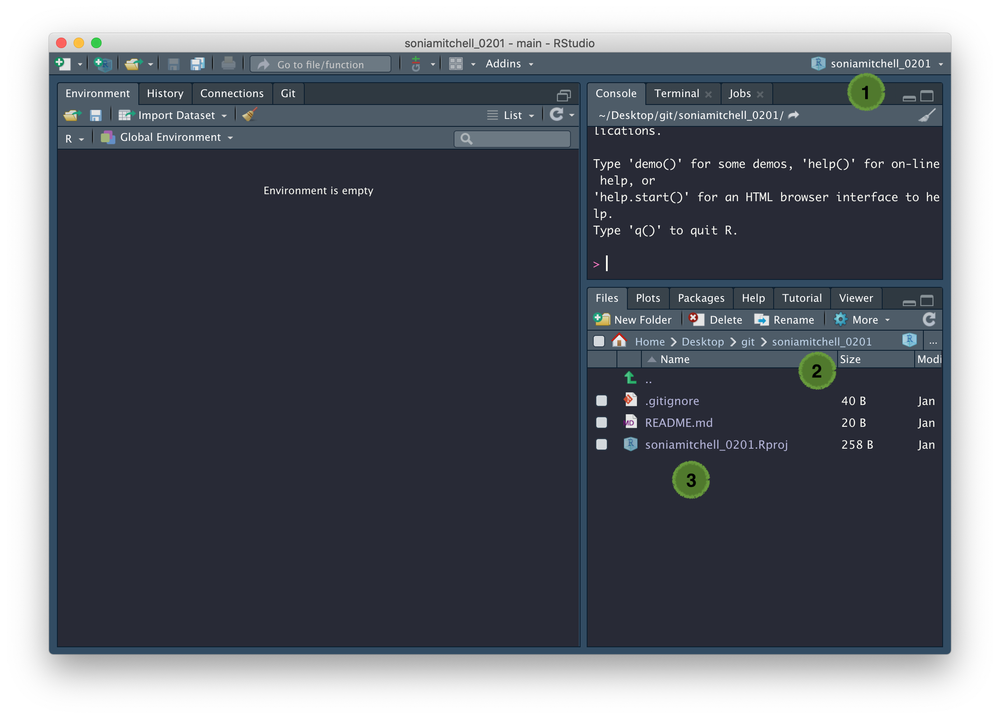
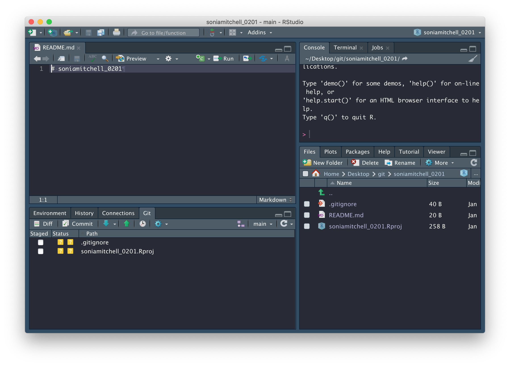
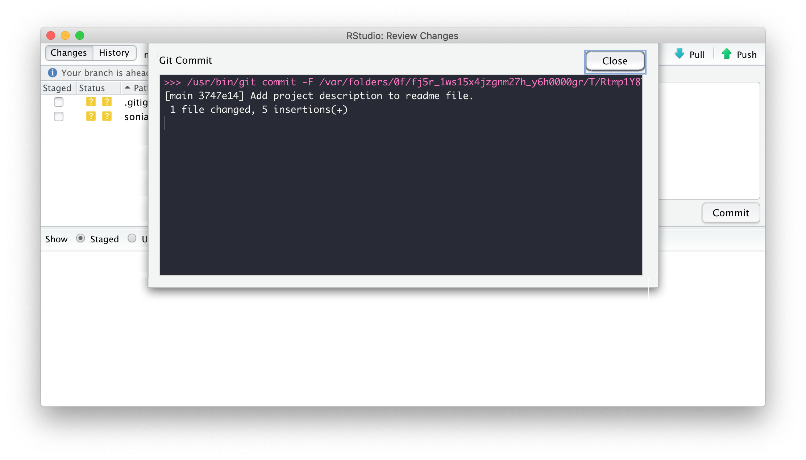

Version control with GitHub and RStudio
February 01 2021
use_github.RmdVersion control
with GitHub and RStudio
Create a new GitHub repository
It’s important that you use version control in your project workflow, so let’s set up a new GitHub repository (you should make a new repository for each project you’re working on). To do this, go to the IBAHCM organisation on GitHub, then click on click New.

You should always choose a short, descriptive name for your repository. But in this case, to make it easier for us to identify you, please name your repository githubusername_0201 (where githubusername is your username on GitHub, and 0201 corresponds to the first part of Practical series 2). Make sure you’re creating a Private repository, check the box to Initialize this repository with a README, then select Create repository.

Note that in Practical series 3 you’ll be writing a package… and when doing so it’s good practice for the name of your repository to match the name of your package. It’s important to be aware that the name of a package “should contain only (ASCII) letters, numbers and dot, have at least two characters and start with a letter and not end in a dot” (ref). Though very few package names include a dot.
Since we’re not working with packages just yet, including an underscore in the name of a repository is perfectly fine. Your GitHub repo should now contain a single README.md file look a bit like this:

Now click on the green Code button and copy the URL associated with your GitHub repository to your clipboard

Create a new RStudio project
In RStudio, click File > New project…, then since we’re integrating version control into this project workflow, you should select Version Control.

Select the option to clone a project from a Git repository.

Paste your Repository URL into the first box, then click Browse… and navigate to the git folder on your desktop. If you don’t have a git folder on your desktop then make one, as it’s good practice to keep all of your projects together and well organised. RStudio will create a new subdirectory that will mirror the contents of your Git repository (so make sure you don’t already have a folder with the same name as the repository you created, as this will cause problems). Now click Create Project and enter your GitHub username and password if you’re asked.

Congratulations! You have successfully created a new RStudio project (now with added version control). In the example below, (1) the RStudio project is called soniamitchell_0201, (2) a new directory, soniamitchell_0201, has been created, which is now your working directory, and inside this directory are (3) three files, including a GitHub README.md file (imported from your GitHub repository), an RStudio project file (soniamitchell_0201.Rproj), and an invisible .gitignore file (created by RStudio).
Note the appearance of a new Git tab next to Connections. This is important.

Using git in RStudio
Compare the contents of your working directory to the files listed in the Git tab. The Git tab is a useful tool that shows you how your remote directory (your GitHub repository) differs from your local directory (in this case ~/Desktop/Git/soniamitchell_0201). Currently, the README.md file in your local directory is identical to the one in your remote directory. That’s why you can’t see it in the Git tab. Instead, .gitignore and soniamitchell_0201.Rproj are listed with yellow question marks in the Status column. What do these icons mean?
- “?” - Files or directories that don’t currently exist in your git repository (you either want to commit these or add them to
.gitignore) - “A” - Files that have been staged and are ready to commit (you’re in the process of committing these)
- “M” - Files that are modified versions of those in the repository (you definately want to commit these)
- “D” - Files that are no longer in your local directory (you’ve likely deleted these and want to commit their absence to GitHub)
Open the README.md file by clicking on its filename in the Files tab. Does this look familiar? (Compare the contents of this file to your repository on GitHub)

Usually a GitHub README (written in GitHub Flavored Markdown) will describe the contents of the GitHub repository or give an example of how to use the contents of said repository. Make some edits to README.md and save your file. Note that when we make edits to the README file, its Status changes to “M”. This means that the file in your local directory is no longer identical to the file in your remote directory (on GitHub). Check the box next to the file you want to commit (README.md), then click Commit.

The RStudio: Review Changes window has opened. Make sure the checkbox is ticked next to README.md and enter a Commit message. Your message should describe the changes you’ve made to the file you’re uploading. These changes are shown in the lower half of the screen, with deletions and insertions highlighted in red and green, respectively. Click Commit to stage your changes (preparing to upload to GitHub).

Congratulations! README.md is now staged, with 5 insertions. Close the RStudio: Review Changes window.

Notice that README.md has disappeared from the Git tab? That’s because it’s packaged up (staged) and ready to be shipped out (pushed) to GitHub. Click on the green Push arrow, to push all staged files (at the moment, just README.md) to GitHub. Enter your password if you’re asked for it.

Congratulations again! You’ve successfully pushed these changes to GitHub. Go take a look at your GitHub repository and you’ll see that the GitHub README has been updated.